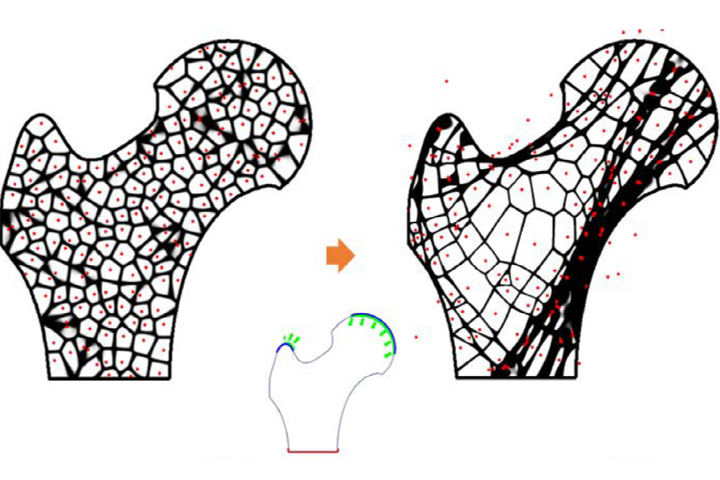
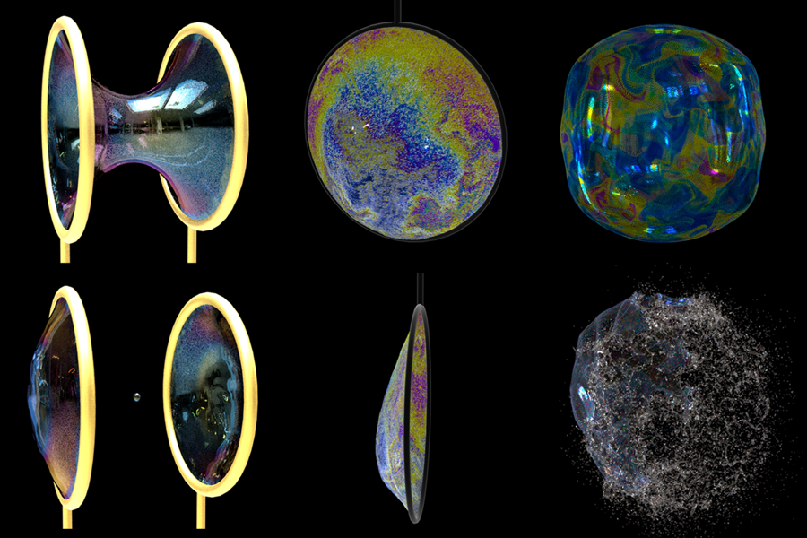
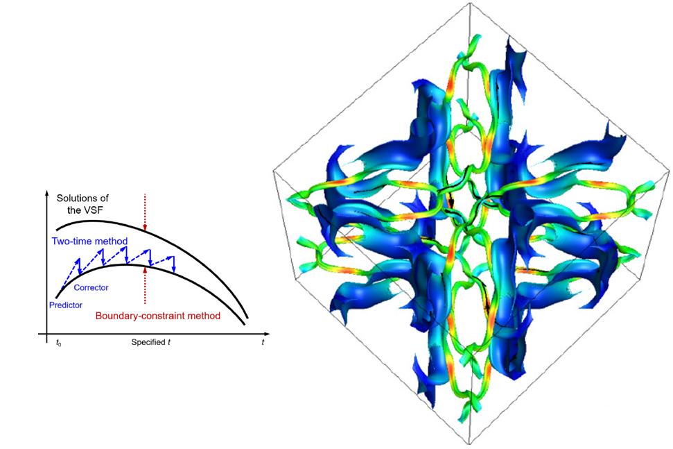

Shiying Xiong
Assistant Professor at Zhejiang University
Office: Yuquan Campus, Zhejiang University
Email: shiying.xiong@zju.edu.cn

I am an Assistant Professor in the School of Aeronautics and Astronautics at Zhejiang University. I received a BS degree in Physics in 2014 and Ph.D. in Fluid Mechanics in 2019 from Jilin University and Peking University, respectively. For the postdoctoral time from Oct. 2019 to Nov. 2022, I spent three years in the Visual Computing Lab at Dartmouth College and a short, transitional time at HKUST.
My research interests lie in vortex dynamics, interfacial dynamics, and scientific machine learning. I am always fascinated by the symmetries in physics, especially the geometric description of fluid mechanics. I plan to carry out my future research: geometric and topological fluid mechanics, numerical methods to simulate complex fluids with rich interfacial and vortical dynamics, and scientific machine learning in fluid mechanics.
I am looking for highly motivated students to join my lab at Zhejiang University. Post-doctors, graduate, and undergraduate students are welcome to contact me by email.
Publications (Corresponding author *)
Shiying Xiong*, Xingzhe He, Yunjin Tong, Yitong Deng, and Bo Zhu
Neural vortex method: From finite Lagrangian particles to infinite dimensional Eulerian dynamics
Computers and Fluids, 258, 105811, 2023
[PDF]

Fan Feng, Shiying Xiong, Ziyue Liu, Zangyueyang Xian, Yuqing Zhou, Hiroki Kobayashi, Atsushi Kawamoto, Tsuyoshi Nomura, and Bo Zhu
Cellular topology optimization on differentiable Voronoi diagrams
International Journal for Numerical Methods in Engineering, 124, 282–304, 2023
[PDF]


Shanxin Ruan, Shiying Xiong, Jiaping You, and Yue Yang∗
Generation of streamwise helical vortex loops via successive reconnections in early pipe transition
Physics of Fluids, 34, 054112, 2022
[PDF]
Rui Tao, Hongxiang Ren, Yunjin Tong, and Shiying Xiong*
Construction and evolution of knotted vortex tubes in incompressible Schrödinger flow
Physics of Fluids, 33, 077112, 2021 (Editor’s pick)
[PDF]
Shiying Xiong, Rui Tao, Yaorui Zhang, Fan Feng, and Bo Zhu
Incompressible flow simulation on vortex segment clouds
ACM Transactions on Graphics (SIGGRAPH), 40, 98, 2021 (Featured on video trailer)
[PDF] [WEB]

Mengdi Wang, Yitong Deng, Xiangxin Kong, Aditya H. Prasad, Shiying Xiong, and Bo Zhu
Thin-film smoothed particle hydrodynamics fluid
ACM Transactions on Graphics (SIGGRAPH), 40, 110, 2021 (Featured on video trailer, Two minute papers)
[PDF] [WEB]


Shiying Xiong and Yue Yang*
Effects of twist on the evolution of knotted magnetic flux tubes
Journal of Fluid Mechanics, 895, A28, 2020
[PDF]

Shiying Xiong and Yue Yang*
Evolution and helicity analysis of linked vortex tubes in viscous flows
SCIENTIA SINICA Physica, Mechanica and Astronomica, 50, 040005, 2020 (in Chinese)
[PDF]
Shiying Xiong and Yue Yang*
Identifying the tangle of twisted vortex tubes in homogeneous isotropic turbulence
Journal of Fluid Mechanics, 874, 952-978, 2019 (Featured on cover)
{kind=link}
[PDF]
Shiying Xiong and Yue Yang*
Construction of knotted vortex tubes with the writhe-dependent helicity
Physics of Fluids, 31, 047101, 2019 (Editor’s pick)
[PDF]

Jinhua Hao, Shiying Xiong, and Yue Yang*
Tracking vortex surfaces frozen in the virtual velocity in non-ideal flows
Journal of Fluid Mechanics, 863, 513-544, 2019
[PDF]

Hao Zhou, Jiaping You, Shiying Xiong, Yue Yang*, Dominique Thévenin, and Shiyi Chen
Interactions between the premixed flame front and the three-dimensional Taylor-Green vortex
Proceedings of the Combustion Institute, 37, 2461-2468, 2019
[PDF]
Yaomin Zhao, Shiying Xiong, Yue Yang*, and Shiyi Chen
Sinuous distortion of vortex surfaces in the lateral growth of turbulent spots
Physical Review Fluids, 3, 074701, 2018
[PDF]
